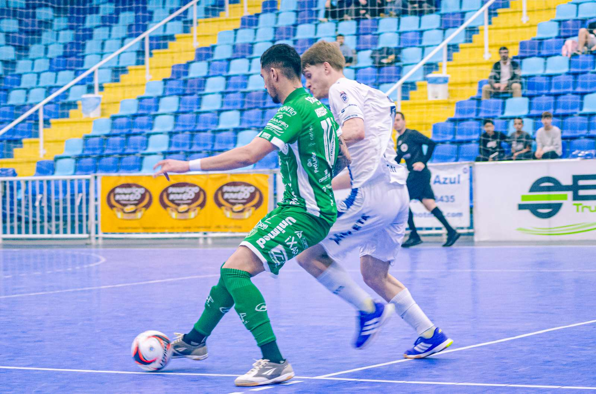
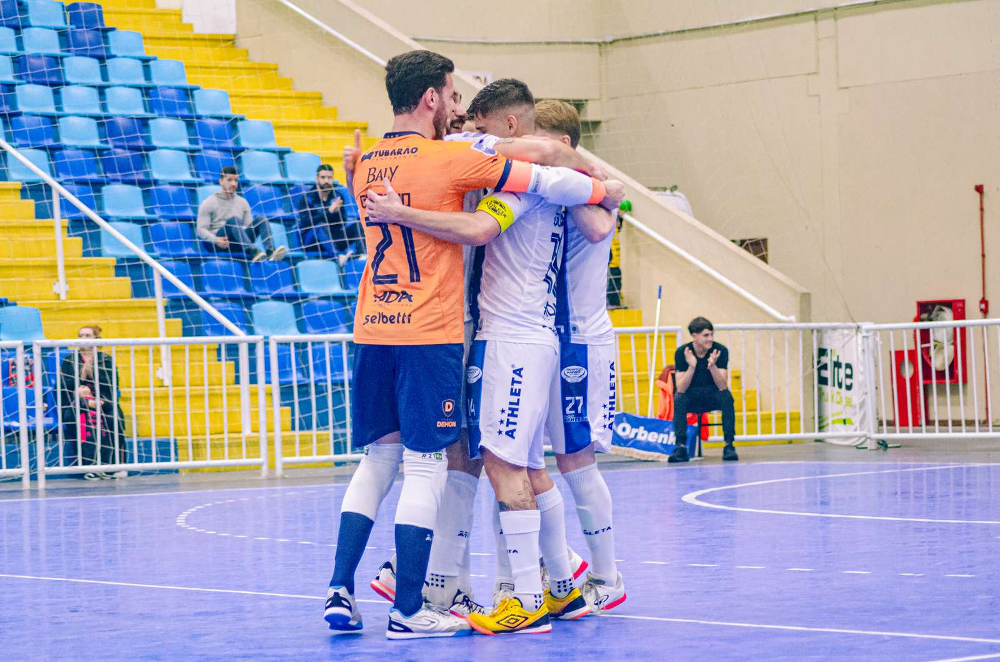

A Prefeitura de Chapecó/Chapecoense/Unochapecó entrou em ação novamente na noite desta quinta-feira (10). Desta vez, o compromisso valeu pela penúltima rodada (10ª) da primeira fase da Série Ouro da Federação Catarinense de Futsal.
O Verdão das Quadras enfrentou o Tubarão, na Arena Multiuso Prefeito Estêner Soratto da Silva, no Sul do Estado, e acabou superado por 3 a 0. Apesar do resultado, o time do Oeste continua na liderança do campeonato. A equipe do técnico Leo Schroeder volta a jogar já nesta sexta (11).

Integrante da LNF Gold, a divisão de elite da Liga Nacional, o Tubarão balançou a rede logo a 1'06", com Bruno. A Chape Futsal criou chances, mas a bola insistiu em não entrar. Os anfitriões ampliaram a vantagem no fim da primeira etapa com Glauber, aos 16'40", e Alemão, aos 19'50", em cobrança de tiro livre. O placar não mudou no segundo tempo.

Em primeiro
O resultado mantém a Chapecoense com 19 pontos em primeiro lugar, agora em 10 partidas. A vice-liderança é do Jaraguá, com a mesma pontuação e número de jogos igual. Em terceiro está o Pouso Redondo, que soma 19 pontos em nove duelos – tem compromisso pendente com o Criciúma, fora de casa – e será o adversário do Verdão na última rodada, no Alto Vale do Itajaí. Será uma disputa direta pelo topo da tabela.
Próximo desafio
A delegação verde-branca deixa Tubarão nesta sexta-feira, logo após o almoço, e vai para Rio do Sul, onde jogará à noite (20h). O confronto vale pela ida das quartas de final da Copa Santa Catarina.